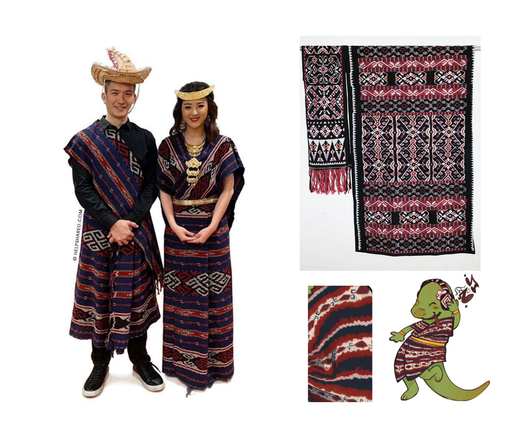
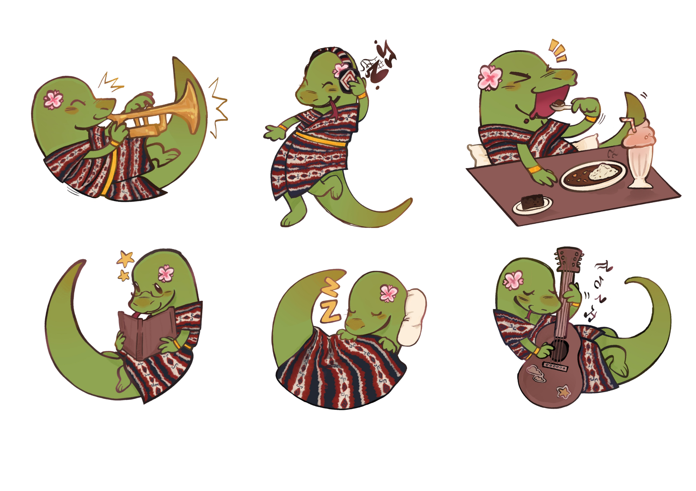

PRODUK AKHIR (Gantungan Kunci 'Charmos')
Dalam bazar kami, tema besar kami adalah “SMARANA: Semarak Budaya Indonesia Menghidupkan Cerita Rakyat”. Tujuan dari tema ini adalah untuk mendorong para siswi dan para penjual untuk melestarikan dan merasa bangga atas kekayaan budaya di Indonesia. Selain itu tujuan dari tema ini adalah untuk mengedukasi pembeli mengenai budaya-budaya lokal. Salah satu budaya yang diwariskan adalah pakaian tradisional. Dalam proyek ini, kami mengangkat pakaian tradisional sebagai media untuk menunjukkan keunikan budaya Nusa Tenggara Timur (NTT). Selain itu, kita juga menekankan keragaman fauna di Indonesia, dengan menggunakan hewan Komodo, binatang khas NTT, sebagai maskot kami.
Pakaian tradisional NTT yang kami gunakan adalah pakaian adat suku Rote, yang memiliki keberagaman dalam warna dan motif. Pakaian adat ini melambangkan kebangsawan dan keraifan lokal, melalui teknik tenun ikat. Dengan waktu, busana ini berevolusi menjadi tenun kapas yang kaya motif. Motif tradisional dari busana tersebut terinspirasi dari keindahan alam di NTT, seperti tanaman, hewan, dan bentuk geometris, hingga menunjukkan identitas marga dan bangga atas budaya NTT.

Refrensi pakaian tradisional suku Rote yang digunakan dalam produk kami.
Hewan Komodo merupakan salah satu kebanggaan terbesar bagi masyarakat Nusa Tenggara Timur (NTT). Sebagai kadal purba terbesar di dunia yang masih bertahan hingga saat ini, Komodo menjadi simbol kekuatan alam dan identitas kultural yang mendalam bagi warga lokal. Habitat aslinya di Taman Nasional Komodo menjadi pusat penelitian biologi yang sangat penting. Bagi masyarakat NTT, Komodo bukan sekadar satwa endemik, melainkan warisan kaum leluhur yang harus dijaga kelestariannya agar tetap menjadi lambang keanekaragaman hayati di NTT.
Melalui perpaduan antara motif tradisional dan pakaian adat suku Rote dengan hewan komodo, kami membuat gantungan kunci maskot komodo kami memakai pakaian adat suku Rote dan melakukan aktivitas yang sesuai dengan hobi setiap anggota, bertujuan untuk mempromosikan dan menunjukkan budaya NTT dan menyatukan budaya tradisional dan tren zaman sekarang, sehingga menjadikan gantungan kunci kami suatu hal kecil yang bermakna. Target pembeli pada produk ini adalah anak-anak atau remaja yang ingin sesuatu lucu yang bisa digantung pada tas, kotak pensil, dan sebagainya, yang bermakna. Dengan menggunakan pakaian adat, kami berharap bahwa keberagaman dan keindahan motif khas NTT menjadi suatu budaya yang diketahui dan dikagumi. Nilai budaya yang bisa kami tangkap dari cerita rakyat yang kami dapat adalah menyayangi keluarga tanpa memandang perbedaan atau apapun, selain itu juga peduli dengan alam dan hewan-hewan, serta membanggakan budaya Indonesia.
Proses produksi Charmos dimulai dari pemilihan tema bersama yang mengacu pada Bazar SMARANA, dengan fokus pada budaya NTT sebagai bentuk apresiasi terhadap kekayaan budaya Indonesia. Kelompok memilih komodo sebagai maskot dan menggabungkannya dengan elemen budaya seperti pakaian adat Suku Rote bermotif tenun. Selanjutnya, dibuat enam desain karakter komodo dengan berbagai aktivitas yang mencerminkan hobi anggota, menggunakan teknik digital dan melalui beberapa revisi hingga disepakati bersama. Setelah desain selesai, dilakukan pencarian vendor dengan mempertimbangkan kualitas, harga, dan waktu produksi, sempat terjadi kendala namun akhirnya ditemukan vendor yang sesuai. Pada tahap akhir, dilakukan pemesanan setelah pengecekan sampel, dilanjutkan dengan pemeriksaan kualitas produk, pengemasan, dan penjualan saat bazar dengan harga Rp10.000 per buah, berhasil terjual 78 buah. Produk ini diharapkan tidak hanya sebagai aksesoris, tetapi juga sebagai upaya memperkenalkan dan melestarikan budaya NTT.
PROSES PRODUKSI (Pengalaman Kami)
Dalam proses pemesanan, kami mengirimkan file desain final dengan detail yang lengkap seperti ukuran dan jumlah cetak untuk masing-masing keenam desain yang sudah kami buat. Sebelum memesan, kami meminta sampel produk terlebih dahulu untuk mengecek kualitas dan kriteria kami lainnya. Setelah itu, kami baru membeli produk untuk dijual, dan setelah produk diterima kami juga memeriksa setiap gantungan kunci satu per satu untuk memastikan tidak ada yang cacat atau berbeda dengan desain aslinya. Produk yang sudah kami periksa akan kami kemas dengan rapi menggunakan kantong belanja yang sudah kami sediakan agar rapi dan terlindungi. Pada saat hari Bazar, Charmos kami jual dengan harga Rp10.000 per buah dan pembeli bebas untuk memilih desain yang menurut mereka menarik dan bagus. Setelah Bazar sudah selesai, kami dapat menjual Charmos sebanyak 78 buah. Kami berharap bahwa setiap gantungan kunci Charmos dari kami tidak hanya menjadi aksesoris yang lucu, tetapi juga menjadi salah satu cara atau tindakan kecil kami untuk memperkenalkan dan melestarikan budaya NTT kepada banyak orang.

Hasil Desain produk